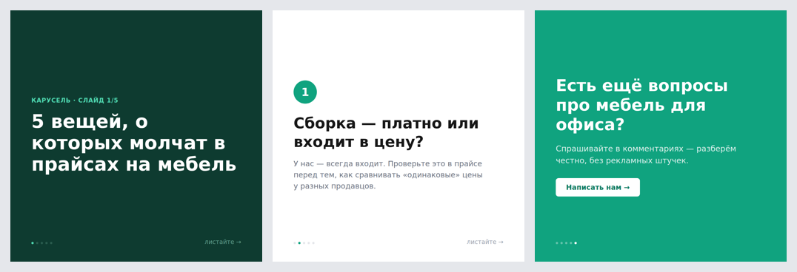
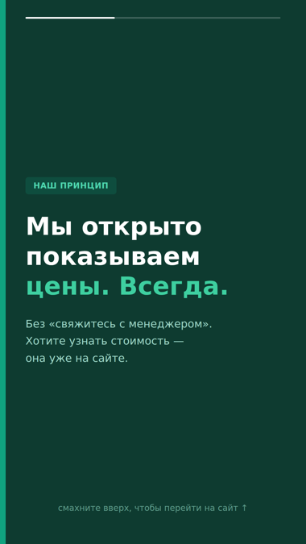

Одну идею из урока 1 («5 вещей, о которых молчат в прайсах»), переупакованную в три реальных формата соцсетей. И понимание, почему нельзя просто скопировать текст в разные рамки.
Пост из урока 1 — это лента. Но у карусели и у сторис — своя механика восприятия, и то, что работает в одном формате, проваливается в другом. Просто скопировать текст в квадратик — типичная ошибка, которую видно за версту: карусель без сюжета, сторис с простыней текста.
Возьми тему «5 вещей, о которых молчат в прайсах» и собери из неё карусель на 5 слайдов: первый — хук с заголовком без ответа, слайды 2–4 — по одному пункту на слайд крупно, последний — призыв написать нам. Каждый слайд — HTML-карточка 1080×1080 в цветах бренда, с индикатором «слайд N/5» и точками-пагинацией.
Результат (слайды 1, 2 и 5 из пяти):

Хук без ответа на первом слайде — заставляет свайпнуть, чтобы узнать. Один пункт на слайд — читается за секунду, а не «весь список сразу мелким шрифтом».
Учебный момент. Карточка из урока 1 (весь список из пяти пунктов на одном изображении) и слайд карусели (один пункт крупно) решают разные задачи. Первая — для ленты, где можно разглядывать не спеша. Вторая — для свайпа, где у тебя есть полсекунды внимания на каждый экран.
Возьми пост про открытые цены и сделай вертикальную сторис 1080×1920: тот же хук, но в разы крупнее и короче — сторис читают за 2–3 секунды.

Заметь: индикатор прогресса сверху и «смахните вверх» снизу — обязательные элементы механики сторис, не декор.
Положи рядом пост из урока 1, карусель и сторис на одну тему. Спроси себя: если бы у тебя было 10 секунд внимания читателя — какой формат донесёт мысль лучше? Обычно ответ разный для разных типов контента: списки и сравнения — в карусель, короткие заявления — в сторис, истории и лонгриды — в ленту.
| Симптом | Причина | Решение |
|---|---|---|
| Карусель, где на первом слайде уже весь ответ | Скопировали логику поста, а не карусели | Первый слайд — вопрос/интрига, ответ — дальше по слайдам |
| Сторис с длинным абзацем текста | Забыли, что сторис читают за секунды | Сократи до одной мысли и крупного шрифта |
| Все три формата выглядят одинаково | Просто изменили пропорции картинки | Меняй саму структуру подачи, не только размер холста |
Возьми любой пост из своего календаря (или из урока 1) и адаптируй его под карусель и сторис. Сравни: какой из трёх версий тебе самому хочется досмотреть/дочитать до конца?
Карточка со списком «5 вещей» из урока 1 и карусель на ту же тему в этом уроке выглядят совсем по-разному — и это правильно. Соблазн просто «нарезать» готовую карточку на слайды экономит время, но не работает: карусель без нарастающего сюжета от слайда к слайду читатель бросает после первого же экрана.